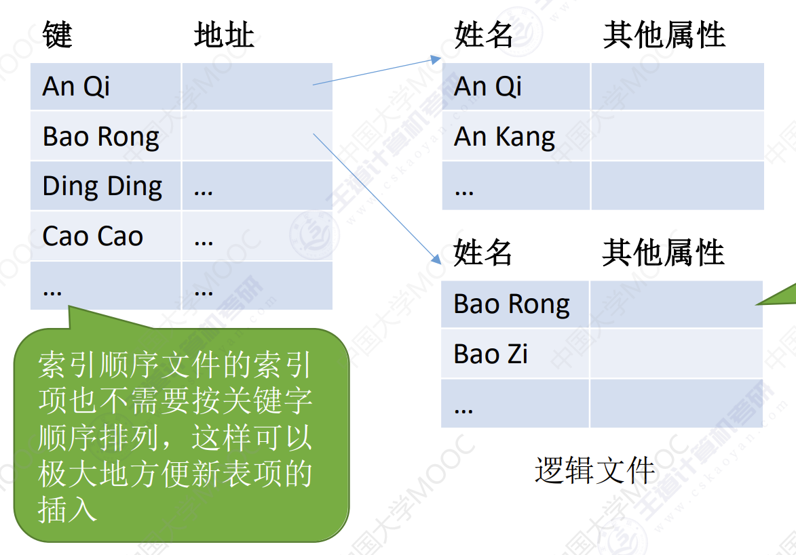
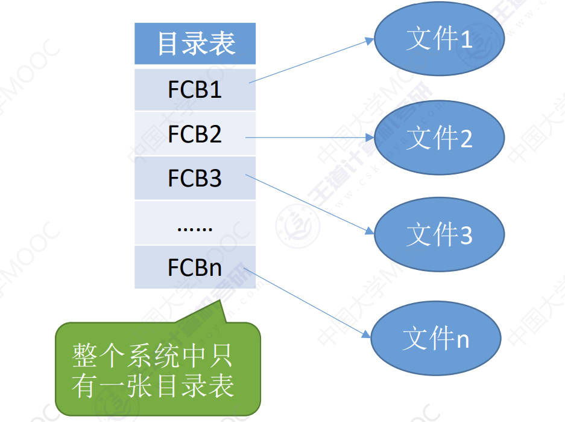
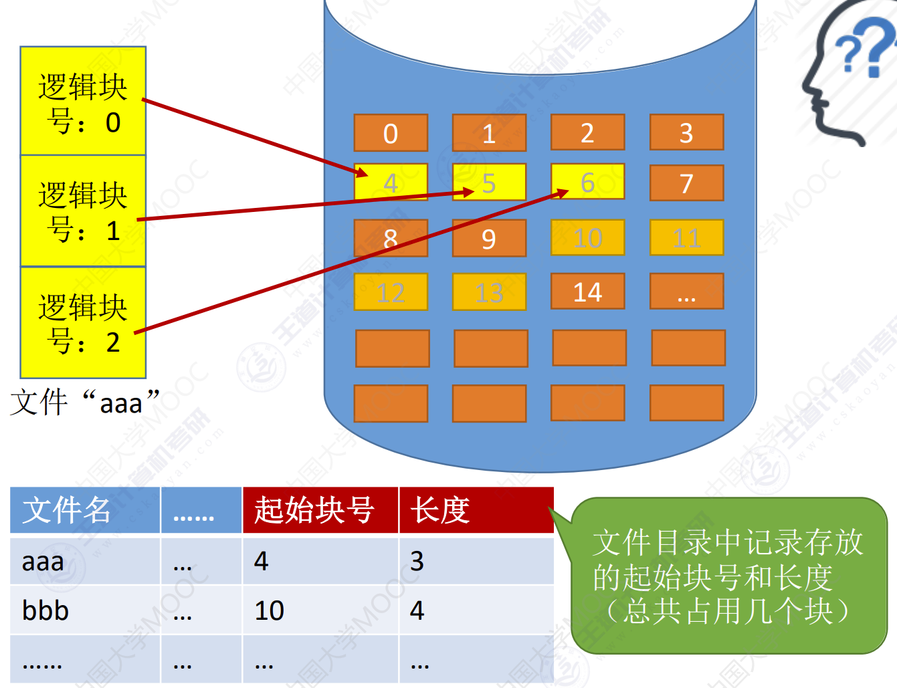
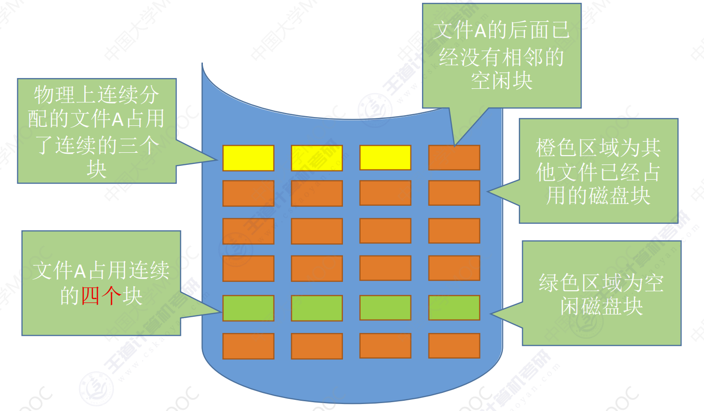
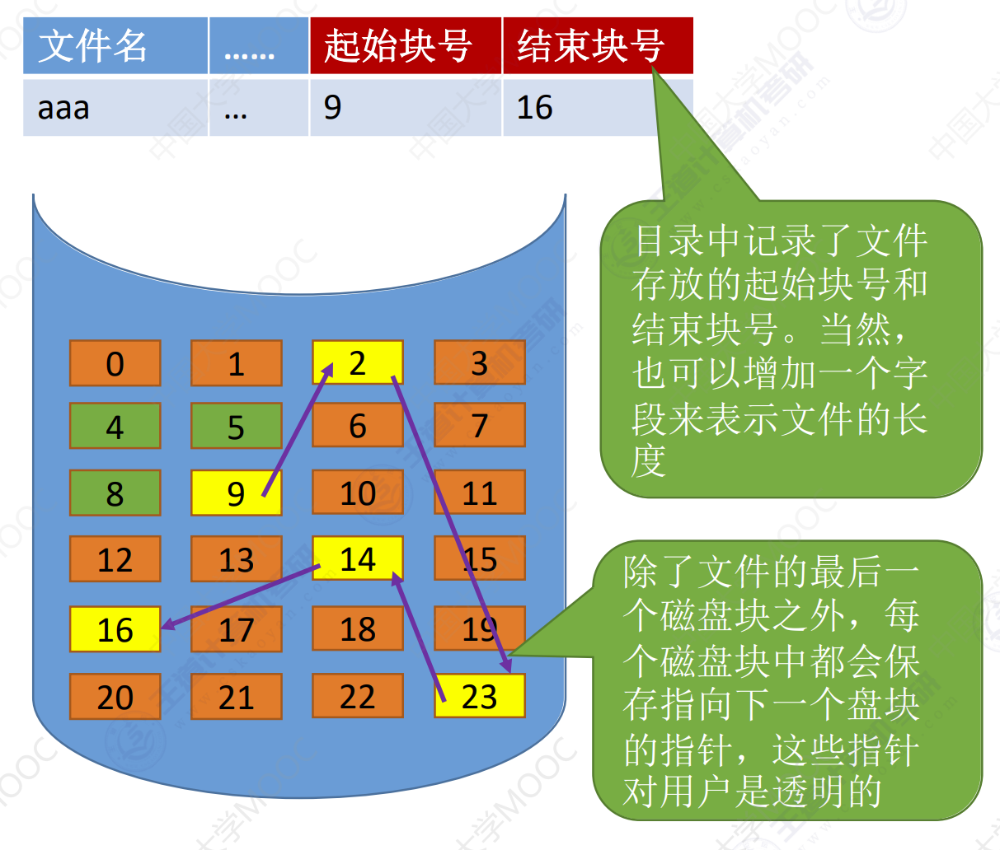
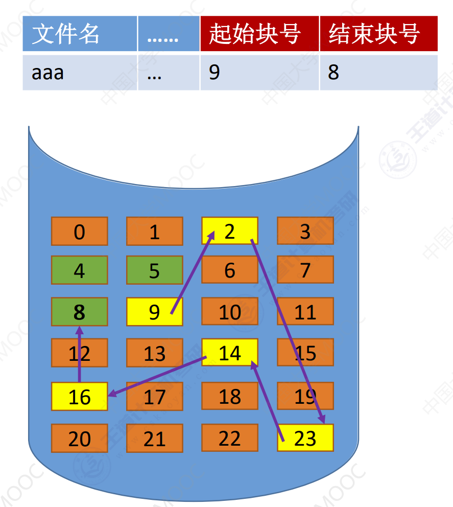
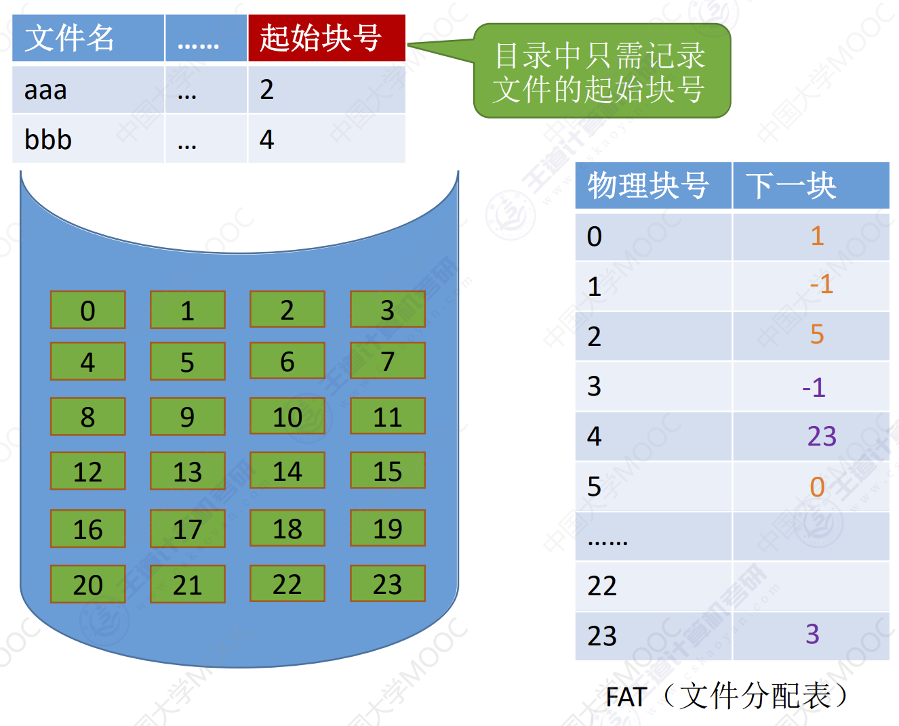
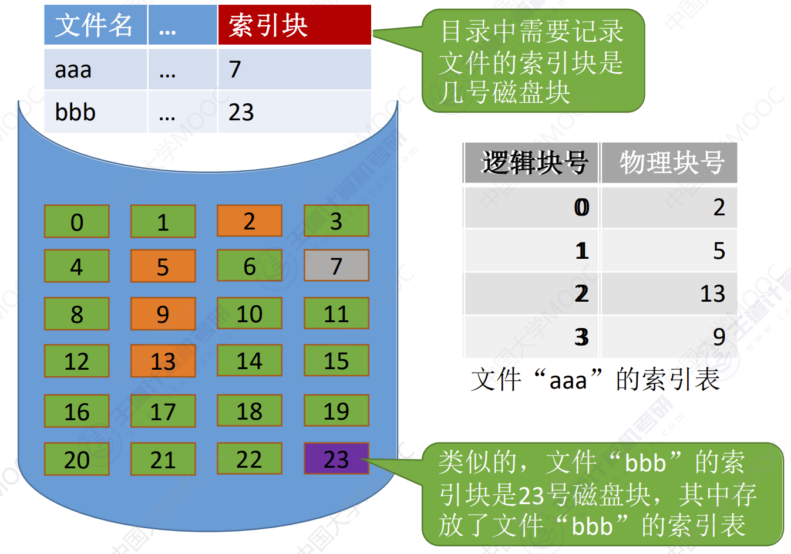

文件结构
文件结构
文件逻辑结构
按文件是否有结构分类，可以分为无结构文件、有结构文件两种。
无结构文件
无结构文件：文件内部的数据就是一系列二进制流或字符流组成。又称“流式文件”。如：Windows 操作系统中的 .txt 文件。

有结构文件
有结构文件：由一组相似的记录组成，又称记录式文件。每条记录又若干个数据项组成。如：数据库表文件。一般来说，每条记录有一个数据项可作为关键字（作为识别不同记录的ID）。根各条记录的长度（占用的空间）是否相等，可以分为定长记录和不定长记录两种。

定长记录：每条记录的长度均固定。各记录项都处在记录中相同的位置，具有相同的顺序和长度。

不定长记录：个别数据项的长度不固定，进而导致各条记录的长度不固定。

顺序文件
顺序文件：文件中记录的一个接一个地顺序排列，记录可以是定长或者不定长的。各个记录在物理上可以顺序存储或者链式存储。

链式存储
无论是定长/可变长的记录，都无法实现随机存取，每次只能从第一个记录开始往后找。
顺序存储
可变长记录：无法实现随机存取，每次只能从第一个记录依次往后找。
定长记录：
- 可实现随机存取，记录长度为L，则第i个记录相对位置是
i * L - 采用串结果，无法快速找到某关键字对应的记录。
- 采用顺序结构，可以快速找到关键字对应的记录（二分查找）。
索引文件
对于可变长记录文件，要找到第i个记录，必须先顺序查找前i - 1个元素，但是很多应用场景中必须使用可变长记录。
- 索引表本身是定长记录的索引文件。因此可以快速查找第i个记录的索引项。可
- 将关键字作为索引号的内容，若按关键字顺序排列。则还可以支持按照关键字二分查找。
- 每当要增加/删除一个记录时，需要对索引表进行修改。由于索引文件有很快的检索速度，因此主要用于对信息处理的及时性要求比较高的场合。
另外，可以用不同的数据项建立多个索引表。如：学生信息表中，可用关键字学号建立一张索引表。也可用姓名建立一张索引表。这样就可以根据姓名快速地检索文件了。
索引顺序文件
索引文件的缺点：每个记录对应一个索引表项，因此索引表可能会很大。比如：文件的每个记录平均只占 8B，而每个索引表项占32个字节，那么索引表都要比文件内容本身大4倍，这样对存储空间的利用率就太低了。
索引顺序文件时索引文件和顺序文件思想的结合。索引顺序文件中，同样会为文件建立一张索引表，但不同的是：并不是每个记录对应一个索引表，而是一组记录对应一个索引表项。
用这种策略确实可以让索引表瘦身，但是能否解决不定长记录的顺序文件检索速度慢的问题呢？
- 若一个顺序文件有
10000个记录，则根据关键字查找，只能从头开始顺序查找，平均须查找5000个记录。 - 若采用索引顺序文件结构，可把
10000个记录分为100组，每组100个记录，则需要先顺序查找索引表找到分组（平均查50次）。找到分组后，再在分组中顺序查找记录（平均查50次）。可见，采用索引顺序文件结构后，平均查找次数减少为100次。
同理：若文件共有50个记录，则可分为1000个分组，每个分组1000个记录。根据关键字检索一个记录平均要查找1000次。这个查找次数依然很多。我们可以建立索引顺序文件解决此问题。
例如，对于一个含 106个记录的文件，可先为该文件建立一张低级索引表，每 100 个记录为一组，故低级索引表中共有 10000 个表项（即10000个定长记录），再把这 10000 个定长记录分组，每组100个，为其建立顶级索引表，故顶级索引表中共有 100 个表项。

Tips: 要为 N 个记录的文件建立 K 级索引，则最优的分组是每组$N^{\frac{1}{K + 1}}$个记录。检索一个记录的平均查找次数是：
$$ \frac{N^{\frac{1}{K + 1}}}{2} × (K + 1)$$
如：本例中，建立2级索引，则最优分组为每组$\frac{1000001}{3} = 100$个记录，平均查找次数是 $\frac{100}{2} × 3 = 150次$
文件目录
文件控制块

FCB的有序集合称为文件目录，一个FCB就是一个文件的目录项。FCB中包含了文件的基本信息（文件名、物理地址、逻辑结构、物理结构），存取控制信息（是否可读可写、禁止访问的用户名单等），实用信息（如文件的建立时间、修改时间）等。
FCB实现了文件和文件之间的映射，使用户可实现按名存取。最重要，最基本的还是文件名、文件存放的物理地址。
需要对目录进行哪些操作？
- 搜索：当用户使用一个文件时，系统要根据文件名搜索目录，找到该文件对应的目录项。
- 创建文件：创建一个新的文件时，需要在其所属的目录中增加一个目录项。
- 删除目录：当删除一个文件时，需要在目录中删除对应的目录项。
- 显示目录：用户可以请求显示目录的内容，如显示该目录中的所有文件及其相应属性。
- 修改目录：某些文件属性保存在目录中，因此这些属性变化时需要修改响响应目录项。
目录结构
单级目录结构
早期的操作系统不支持多级目录系统，整个系统只建立一张目录表，每个文件占一个目录项。
单级目录实现了按名存取，但是不允许文件重名。
在创建文件时，需要先检查目录表中没有重名文件，确定不重名后才能允许建立文件，并将新文件对应的目录项插入目录表中。显然，单级目录结构不适用于多用户操作系统。
两级目录结构
早期的多用户操作系统，采用两级目录结构。分为主文件目录和用户文件目录。

多级目录结构
用户要访问某个文件时要用文件路径名标识文件，文件路径名是个字符串。各级目录之间用/隔开。从根目录出发的路径称为绝对路径。
例如：File structure的绝对路径是：D:/File mamagement/File structure/File structure.md。
系统根据绝对路径一层一层地找到下一级目录。刚开始从外存读入根目录表；找到
File mamagement目录的存放位置后，从外存读入对应目录表；再找到File structure目录存放的位置，在从外存读入对应的目录表；最后才找到文件/File structure.md。整个过程3次IO操作。
例如：此时已经打开了/File mamagement路径，也就是说这张表已经调入了内存，那么可以把他设置为当前目录。当用户想访问某个文件时，可以使用当前目录出发的相对路径。
在Linux中，.表示当前目录，因此如果File structure是当前目录，那么File structure.md的相对路径为./File structure.md。从当前路径出发，只需要查询内存中的File structure目录表，就可知道File structure.md存放的位置。
无环图目录结构
树形目录结构可以很方便地对文件进行分类，层次结构清晰，也能够更有效地进行文件的管理和保护。但是，树形结构不便于实现文件的共享。为此，提出了无环图目录结构。

可以用不同文件名指向同一个文件，甚至可以指向同一个目录（共享目录下的所有内容）。需要为每个结点设置一个共享计算器，用于记录此时有多少个地方共享该节点。用户提出先出节点请求时，只是删除用户的FCB。并使共享计算器减一。
注意：共享文件不同于复制文件。在共享文件中，由于各用户指向的是同一个文件，因此只要其中一个用户修改了文件数据，那么所有用户都可以看到文件数据的变化。
索引节点
其实在查找各级目录的过程中只需要用到文件名这个信息，只有文件名匹配时，才需要读出文件的其他信息。因此可以考虑让目录表瘦身来提升效率。
假设一个FCB是64B，磁盘块的大小为1KB，则每个盘块中只能存放16个FCB。若一个文件目录中共有640个目录项，则共需要占用 640 / 16 = 40 个盘块。因此按照某文件名检索该目录，平均需要查询320个目录项，平均需要启动磁盘20次（每次磁盘I/O读入一块）。
若使用索引结点机制，文件名占14B，索引结点指针站2B，则每个盘块可存放64个目录项，那么按文件名检索目录平均只需要读入 320 / 64 = 5 个磁盘块。显然，这将大大提升文件检索速度
当找到文件名对应的目录项时，才需要将索引结点调入内存，索引结点中记录了文件的各种信息，包括文件在外存中的存放位置，根据存放位置即可找到文件。存放在外存中的索引结点称为磁盘索引结点，当索引结点放入内存后称为内存索引结点。相比之下内存索引结点中需要增加一些信息，比如：文件是否被修改、此时有几个进程正在访问该文件等。
文件物理结构
文件块，磁盘块
在内存管理中，进程的逻辑地址空间被分为一个一个页面同样的，在外存管理中，为了方便对文件数据的管理，文件的逻辑地址空间也被分为了一个一个的文件块。于是文件的逻辑地址也可以表示为（逻辑块号，块内地址）的形式。

文件分配方式
连续分配
连续分配方式要求每个文件在磁盘上占有一组连续的块。
如何实现文件的逻辑块号到物理块号的转变？
用户给出要访问的逻辑块号，操作系统找到该文件对应的目录项（FCB）（物理块号 = 起始块号 + 逻辑块号）当然，还需要检查用户提供的逻辑块号是否合法（逻辑块号 ≥ 长度 就不合法）。可以直接算出逻辑块号对应的物理块号，因此连续分配支持顺序访问和直接访问（即随机访问）
特点：读取某个磁盘块时，需要移动磁头。访问的两个磁盘块相隔越远，移动磁头所需时间就越长。
结论：连续分配的文件在顺序读/写时速度最快
是否方便拓展文件？
特点：若此时文件A要拓展，需要再增加一个磁盘块（总共要4个连续的磁盘块）。由于采用连续结构，因此文件A占用的磁盘块必须是连续的。因此只能将文件A全部迁移到绿色区域。
结论：物理上采用连续分配的文件不方便拓展。
- 优点：支持顺序访问和直接访问（即随机访问）；连续分配的文件在顺序访问时速度最快
- 缺点：不方便文件拓展；存储空间利用率低，会产生磁盘碎片
链接分配
链接分配采取离散分配的方式，可以为文件分配离散的磁盘块。分为隐式链接和显式链接两种。
隐式链接
如何实现文件的逻辑块号到物理块号的转变？
特点：从目录项中找到起始块号（即0号块），将0号逻辑块读入内存，由此知道1号逻辑块存放的物理块号，于是读入1号逻辑块，再找到2号逻辑块的存放位置……以此类推。因此，读入i号逻辑块，总共需要 i+1 次磁盘 I/O 。
结论：采用链式分配（隐式链接）方式的文件，只支持顺序访问，不支持随机访问，查找效率低。另外，指向下一个盘块的指针也需要耗费少量的存储空间。
是否方便拓展文件？
若此时要拓展文件，则可以随便找一个空闲磁盘块挂到文件的空闲磁盘块，挂到文件的磁盘块链尾，并修改文件的FCB。
结论：采用隐式链接的链接分配方式，很方便文件拓展。另外，所有的空闲磁盘块都可以被利用，不会有碎片问题，外存利用率高
优点：很方便文件拓展，不会有碎片问题，外存利用率高。
缺点：只支持顺序访问，不支持随机访问，查找效率低，指向下一个盘块的指针也需要耗费少量的存储空间。
显式链接
把用于链接文件各物理块的指针显式地存放在一张表中。即文件分配表（FAT，File Allocation Table）
注意：一个磁盘仅设置一张FAT。开机时，将FAT读入内存，并常驻内存。 FAT 的各个表项在物理上连续存储，且每一个表项长度相同，因此物理块号字段可以是隐含的。
如何实现文件的逻辑块号到物理块号的转变？
从目录项中找到起始块号，若i>0，则查询内存中的文件分配表FAT，往后找到 i 号逻辑块对应的物理块号。逻辑块号转换成物理块号的过程不需要读磁盘操作。
结论：采用链式分配（显式链接）方式的文件，支持顺序访问，也支持随机访问（想访问 i 号逻辑块时，并不需要依次访问之前的 0 ~ i - 1 号逻辑块），由于块号转换的过程不需要访问磁盘，因此相比于隐式链接来说，访问速度快很多。
隐式链接——除文件的最后一个盘块之外，每个盘块中都存有指向下一个盘块的指针。文件目录包括文件第一块的指针和最后一块的指针。
优点：很方便文件拓展，不会有碎片问题，外存利用率高。
缺点：只支持顺序访问，不支持随机访问，查找效率低，指向下一个盘块的指针也需要耗费少量的存储空间。
索引分配
索引分配允许文件离散地分配在各个磁盘块中，系统会为每个文件建立一张索引表，索引表中记录了文件的各个逻辑块对应的物理块（索引表的功能类似于内存管理中的页表——建立逻辑页面到物理页之间的映射关系）。索引表存放的磁盘块称为索引块。文件数据存放的磁盘块称为数据块。
假设某个新创建的文件aaa的数据一次存放在磁盘块2->5->13->9。7号磁盘块作为aaa的索引块，索引块保存了索引表的内容。
注：在显式链接的链式分配方式中，文件分配表FAT 是一个磁盘对应一张。而索引分配方式中，索引表是一个文件对应一张。
可以用固定的长度表示物理块号（如：假设磁盘总容量为1TB=240B，磁盘块大小为1KB，则共有230个磁盘块，则可用4B 表示磁盘块号），因此，索引表中的逻辑块号可以是隐含的。
如何实现文件的逻辑块号到物理块号的转变？
- 用户给出要访问的逻辑块号i，操作系统找到该文件对应的FCB。
- 从目录项中可知该索引存放的位置，将索引表从外存读入内存，并查找索引表即可知道i号逻辑块在外存中的存放位置。
可见，索引分配方式可以支持随机访问。文件拓展也很容易实现（只需要给文件分配一个空闲块，并增加一个索引表项即可）但是索引表需要占用一定的存储空间。
链接分配
链接方案：如果索引表太大，一个索引块装不下，那么可以将多个索引块链接起来存放。
假设磁盘块大小为1KB，一个索引表项占4B，则一个磁盘块只能存放256个索引项。
- 若一个文件大小为
256 * 256KB = 64MB。一共有256 * 256个块，也就是256 * 256个索引项，也就是256个索引块来存储，这些索引块用链接方案连起来。 - 若要访问文件的最后一个逻辑块，就必须找到最后一个索引块，而各个索引块之间是用指针链接起来的，因此必须先顺序地读入前 255 个索引块。
多层索引
多层索引：建立多层索引（原理类似于多级页表）。使第一层索引块指向第二层的索引块。还可根据文件大小的要求再建立第三层、第四层索引块。

假设磁盘块大小为1KB，一个索引表项占4B，则一个磁盘块只能存放256个索引项。
- 若文件采用两层索引，则该文件的最大长度可以到
256 * 256KB = 64MB。 - 可根据逻辑号算出应该查找索引表中的哪个表项。
如：要访问 1026 号逻辑块，则
1026 / 256 = 4，1026 % 256 = 2。因此可以先将一级索引表调入内存，查询 4 号表项，将其对应的二级索引表调入内存，再查询二级索引表的2号表项即可知道 1026 号逻辑块存放的磁盘块号了。访问目标数据块，需要3次磁盘I/O。
采用 K 层索引结构，且顶级索引表未调入内存，则访问一个数据块只需要 K + 1 次读磁盘操作。
混合索引
混合索引：多种索引分配方式的结合。例如，一个文件的顶级索引表中，既包含直接地址索引（直接指向数据块），又包含一级间接索引（指向单层索引表）、还包含两级间接索引（指向两层索引表）

总结
- 链接方案：如果索引表太大，一个索引块装不下，那么可以将多个索引块链接起来存放。缺点：若文件很大，索引表很长，就需要将很多个索引块链接起来。想要找到 i 号索引块，必须先依次读入 0~i-1号索引块，这就导致磁盘I/O次数过多，查找效率低下。
- 多层索引：建立多层索引（原理类似于多级页表）。使第一层索引块指向第二层的索引块。还可根据文件大小的要求再建立第三层、第四层索引块。采用 K 层索引结构，且顶级索引表未调入内存，则访问一个数据块只需要 K + 1 次读磁盘操作。缺点：即使是小文件，访问一个数据块依然需要K+1次读磁盘。
- 混合索引：多种索引分配方式的结合。例如，一个文件的顶级索引表中，既包含直接地址索引（直接指向数据块），又包含一级间接索引（指向单层索引表）、还包含两级间接索引（指向两层索引表） 。
优点：对于小文件来说，访问一个数据块所需的读磁盘次数更少。
超级超级超级重要考点：
- 要会根据多层索引、混合索引的结构计算出文件的最大长度（Key：各级索引表最大不能超过一个块）
- 要能自己分析访问某个数据块所需要的读磁盘次数（Key：FCB中会存有指向顶级索引块的指针，因此可以根据FCB读入顶级索引块。每次读入下一级的索引块都需要一次读磁盘操作。另外，要注意题目条件——顶级索引块是否已调入内存）
文件存储空间的管理
存储空间的划分的初始化
安装 Windows 操作系统的时候，一个必经步骤是——为磁盘分区（C: 盘、D: 盘、E: 盘等）

存储空间管理
空闲表法

- 如何分配磁盘块：与内存管理中的动态分区分配很类似，为一个文件分配连续的存储空间。同样可采用首次适应、最佳适应、最坏适应等算法来决定要为文件分配哪个区间。
- 如何回收磁盘块：与内存管理中的动态分区分配很类似，当回收某个存储区时需要有四种情况
- 回收区的前后都没有相邻空闲区
- 回收区的前后都是空闲区
- 回收区前面是空闲区
- 回收区后面是空闲区
总之，回收时需要注意表项的合并问题。
空闲链表法

空闲盘块链
操作系统保存着链头，链尾的指针。
如何分配：若某文件申请K个盘块，则从链头开始依次摘下K个盘块分配，并修改空闲链的链头指针。
如何回收：回收的盘块依次挂到链尾，并修改空闲链的链尾指针。
空闲盘区链
操作系统保存着链头，链尾的指针。
如何分配：若某文件申请K个盘块，则可以采用首次适应，最佳适应等算法，从链头开始检索。按照算法规则找到一个大小符合要求的空闲盘区，分配给文件。若没有合适的连续空闲分区块，也可以将不同盘区的盘块同时分配给一个文件，注意分配后可能要修改对应的链指针、盘区大小等数据。
如何回收：若回收区和某个空闲盘区相邻，则需要将回收区合并到空闲盘区中。若回收区没有和空闲盘区相邻，将回收区作为单独的一个空闲盘区挂到链尾。
位示图法

如何分配：若文件需要K个块
- 顺序扫描位示图，找到K个相邻或不相邻的0。
- 根据字号。位号算出对应的盘块号，将相应盘块分配给文件。
- 将相应位设置为1。
如何回收：
- 根据回收的盘块号计算出对应的字号，位号。
- 将相应二进制位设为0。
成组链接法
空闲表法、空闲链表法不适用于大型文件系统，因为空闲表或空闲链表可能过大。UNIX系统中采用了成组链接法对磁盘空闲块进行管理。
文件卷的目录区中专门用一个磁盘块作为超级块，当系统启动时需要将超级块读入内存。并且要保证内存与外存中的“超级块”数据一致。

如何分配：
举例：假设需要1个空闲块
- 检查第一个分组的空闲块是否足够。1 > 100
- 分配第一个分组中的1个空闲块，并修改相应数据。
举例：假设需要100个空闲块
- 检查第一个分组的空闲块是否足够。100 > 100
- 分配第一个分组中的100个空闲块。但由于300号块内存放了再下一组的信息，因此300号块的数据需要复制到超级块中。
如何回收：
举例：假设每个每组最多为100个空闲块，此时第一个分组已有99个块，还要再回收一个块。
- 将超级块中的数据复制到新回收的块中。
- 修改超级块的内容，让新回收的块成为第一个分组。